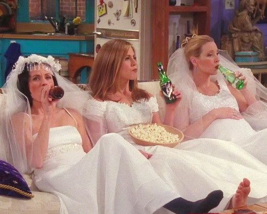

Na estreia da quarta temporada, Ross e Rachel se
reconciliam brevemente. Phoebe torna-se uma mãe
de aluguel para o meio-irmão e sua esposa Alice
. Monica e Rachel são forçados a mudar de apartamentos
com Joey e Chandler, depois de perder uma aposta,
mas conseguem voltar subornando-os com ingressos
para a temporada dos Knicks e um beijo de um minuto
(fora da tela) entre as meninas.
Ross começa a
namorar uma mulher britânica chamada Emily e ao
final da temporada organiza seu casamento em
Londres. Chandler e Monica dormem juntos, e
Rachel decide participar do casamento de Ross
e Emily. Enquanto diz seus votos, Ross utiliza
o nome de Rachel no altar, ao invés do da sua
noiva, para o choque de sua noiva e dos convidados.
Melhores episódios:
- "Aquele do Chandler na Caixa" (04x08)
- "Aquele dos Embriões" (04x12)
- "Aquele da Festa Falsa" (04x16)
- "Aquele com Todos os Vestidos de Noiva" (04x20)
- "Aquele do Casamento do Ross" (04x23/24)
